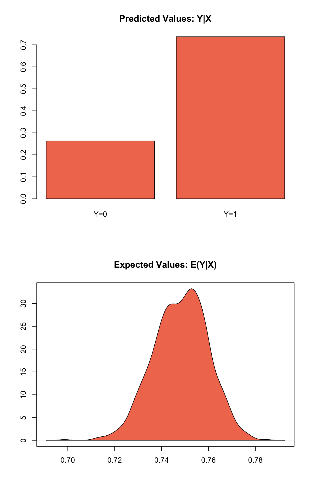
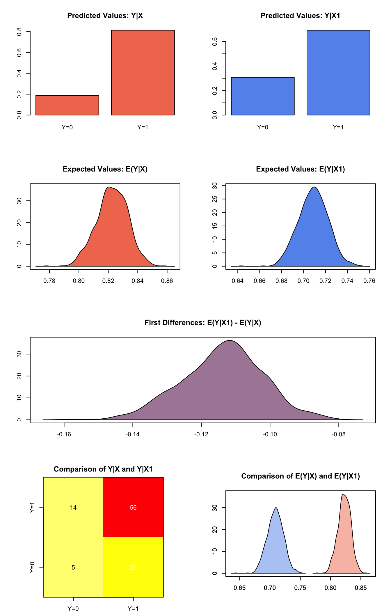

Built using Zelig version 5.1.2.9000
Logistic Regression for Dichotomous Dependent Variables with logit.
Logistic regression specifies a dichotomous dependent variable as a function of a set of explanatory variables.
Load Zelig and attach the sample turnout dataset:
library(Zelig)## Loading required package: survivaldata(turnout)Estimating parameter values for the logistic regression:
z.out1 <- zelig(vote ~ age + race, model = "logit", data = turnout,
cite = FALSE)Summarize estimated paramters:
summary(z.out1)## Model:
##
## Call:
## z5$zelig(formula = vote ~ age + race, data = turnout)
##
## Deviance Residuals:
## Min 1Q Median 3Q Max
## -1.9268 -1.2962 0.7072 0.7766 1.0723
##
## Coefficients:
## Estimate Std. Error z value Pr(>|z|)
## (Intercept) 0.038365 0.176920 0.217 0.828325
## age 0.011263 0.003053 3.689 0.000225
## racewhite 0.645551 0.134482 4.800 1.58e-06
##
## (Dispersion parameter for binomial family taken to be 1)
##
## Null deviance: 2266.7 on 1999 degrees of freedom
## Residual deviance: 2228.8 on 1997 degrees of freedom
## AIC: 2234.8
##
## Number of Fisher Scoring iterations: 4
##
## Next step: Use 'setx' methodFor logit models you can also include the argument odds_ratios = TRUE in the summary call to return odds ratios estimates (\(\mathrm{exp}(\beta)\)):
summary(z.out1, odds_ratios = TRUE)## Model:
##
## Call:
## z5$zelig(formula = vote ~ age + race, data = turnout)
##
## Deviance Residuals:
## Min 1Q Median 3Q Max
## -1.9268 -1.2962 0.7072 0.7766 1.0723
##
## Coefficients:
## Estimate (OR) Std. Error (OR) z value Pr(>|z|)
## (Intercept) 1.039 1.194 0.217 0.828325
## age 1.011 1.003 3.689 0.000225 ***
## racewhite 1.907 1.144 4.800 1.58e-06 ***
## ---
## Signif. codes: 0 '***' 0.001 '**' 0.01 '*' 0.05 '.' 0.1 ' ' 1
##
## (Dispersion parameter for binomial family taken to be 1)
##
## Null deviance: 2266.7 on 1999 degrees of freedom
## Residual deviance: 2228.8 on 1997 degrees of freedom
## AIC: 2234.8
##
## Number of Fisher Scoring iterations: 4Set values for the explanatory variables:
x.out1 <- setx(z.out1, age = 36, race = "white")Simulate quantities of interest from the posterior distribution:
s.out1 <- sim(z.out1, x = x.out1)
summary(s.out1)##
## sim x :
## -----
## ev
## mean sd 50% 2.5% 97.5%
## [1,] 0.7480016 0.01181577 0.7481666 0.7233089 0.7704255
## pv
## 0 1
## [1,] 0.222 0.778Show the results graphically:
plot(s.out1)
Estimating the risk difference (and risk ratio) between low education (25th percentile) and high education (75th percentile) while all the other variables held at their default values.
z.out2 <- zelig(vote ~ race + educate, model = "logit", data = turnout,
cite = FALSE)
x.high <- setx(z.out2, educate = quantile(turnout$educate, prob = 0.75))
x.low <- setx(z.out2, educate = quantile(turnout$educate, prob = 0.25))
s.out2 <- sim(z.out2, x = x.high, x1 = x.low)
summary(s.out2)##
## sim x :
## -----
## ev
## mean sd 50% 2.5% 97.5%
## [1,] 0.8226786 0.01029225 0.8225001 0.8015 0.8430421
## pv
## 0 1
## [1,] 0.168 0.832
##
## sim x1 :
## -----
## ev
## mean sd 50% 2.5% 97.5%
## [1,] 0.7091908 0.01337713 0.7090525 0.6832002 0.7350503
## pv
## 0 1
## [1,] 0.297 0.703
## fd
## mean sd 50% 2.5% 97.5%
## [1,] -0.1134878 0.01172597 -0.1135099 -0.1353285 -0.09047672plot(s.out2)
Let \(Y_i\) be the binary dependent variable for observation \(i\) which takes the value of either 0 or 1.
\[\begin{aligned} Y_i &\sim& \textrm{Bernoulli}(y_i \mid \pi_i) \\ &=& \pi_i^{y_i} (1-\pi_i)^{1-y_i}\end{aligned} \]
where \(\pi_i=\Pr(Y_i=1)\).
\[\pi_i \; = \; \frac{1}{1 + \exp(-x_i \beta)}.\]
where \(x_i\) is the vector of \(k\) explanatory variables for observation \(i\) and \(\beta\) is the vector of coefficients.
\[ E(Y) = \pi_i= \frac{1}{1 + \exp(-x_i \beta)}, \]
given draws of \(\beta\) from its sampling distribution.
The predicted values are draws from the Binomial distribution with mean equal to the simulated expected value \(\pi_i\).
The first difference for the logit model is defined as
\[\textrm{FD} = \Pr(Y = 1 \mid x_1) - \Pr(Y = 1 \mid x).\]
The risk ratio is defined as
\[\textrm{RR} = \Pr(Y = 1 \mid x_1) \ / \ \Pr(Y = 1 \mid x).\]
In conditional prediction models, the average expected treatment effect (att.ev) for the treatment group is
\[ \frac{1}{\sum_{i=1}^n t_i}\sum_{i:t_i=1}^n \left\{ Y_i(t_i=1) - E[Y_i(t_i=0)] \right\}, \]
where \(t_i\) is a binary explanatory variable defining the treatment (\(t_i=1\)) and control (\(t_i=0\)) groups. Variation in the simulations are due to uncertainty in simulating \(E[Y_i(t_i=0)]\), the counterfactual expected value of \(Y_i\) for observations in the treatment group, under the assumption that everything stays the same except that the treatment indicator is switched to \(t_i=0\).
\[ \frac{1}{\sum_{i=1}^n t_i}\sum_{i:t_i=1}^n \left\{ Y_i(t_i=1) - \widehat{Y_i(t_i=0)}\right\}, \]
where \(t_i\) is a binary explanatory variable defining the treatment (\(t_i=1\)) and control (\(t_i=0\)) groups. Variation in the simulations are due to uncertainty in simulating \(\widehat{Y_i(t_i=0)}\), the counterfactual predicted value of \(Y_i\) for observations in the treatment group, under the assumption that everything stays the same except that the treatment indicator is switched to \(t_i=0\).
The Zelig object stores fields containing everything needed to rerun the Zelig output, and all the results and simulations as they are generated. In addition to the summary functions demonstrated above, use standard R utility functions such as coef, vcov, predict to extract model estimates and zelig_qi_to_df to extract simulations.